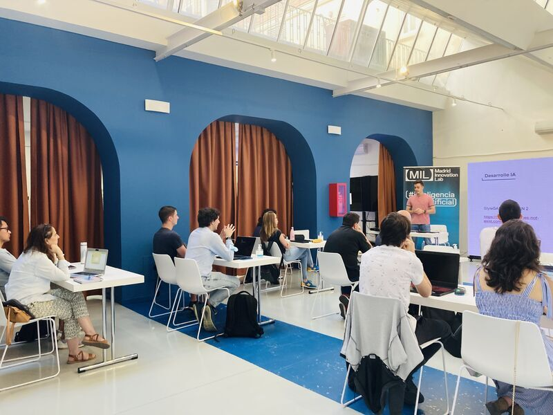

About me
Hi! I'm Álvaro, a researcher with a focus on deep learning and computer vision. I'm currently pursuing my PhD in 3D object detection for autonomous vehicles. My approach to carrying it out is to fuse camera and LiDAR information and process it with deep learning techniques to obtain a more detailed environment perception. With extensive experience in computer vision and proficiency in Python and the main machine / deep learning frameworks, I am dedicated to staying at the forefront of tech developments before an AGI can do my work better that me.
Beyond my work in research, I enjoy keeping up with the latest technological advancements –and giving some talks about them– and sharing my experience in my open courses. I am also passionate about collaboration, communication, and creativity – the values that I believe are essential for success. I am committed to continued learning and growth, recognizing that there is always more to learn in this rapidly evolving field.
Projects
Sensus-loci
Environment for autonomous vehicles via RGB image and LiDAR point cloud fusion. Built on top of MMDetection3D, this project provides support for 3D object detection from the road infrastructure with real-time ROS communication.
Deep Learning Course - Madrid Innovation Lab
Deep Learning Open Course with the main objective of providing a deep understanding of the main concepts of deep learning and its applications in computer vision and natural language processing.

Pyrseia OCR
OCR system for real-time vehicle and license plate recognition from multiple and simultaneous streaming devices. Optimized for low-performance devices and browser visualization.
Autolingua
Automatic analysis tool for linguistic codification of interviews in University of Málaga. Provides support for supervised and unsupervised learning techniques for sociolinguistic analysis.
Publications
2023
Deep Learning for robust vehicle identification
Robot 2022: Fifth Iberian Robotics Conference (pp. 346-358). Springer, Cham
Ramajo-Ballester, Á., González-Cepeda, J., Armingol, J. M. (2023)
2022
Intelligent Video Surveillance Systems for Vehicle Identification Based on Multinet Architecture
Information, 13 (7), 325
González-Cepeda, J., Ramajo-Ballester, Á., Armingol, J. M. (2022)
Reidentificación de vehículos mediante técnicas de deep learning
XLIII Jornadas de Automática (pp. 1031-1039)
Ramajo Ballester, Á., González Cepeda, J., Armingol Moreno, J. M., de la Escalera Hueso, A. (2022)
Vehicle re-identification in road environments using deep learning techniques
ITS European Congress
Ramajo Ballester, Á., González Cepeda, J., Armingol Moreno, J. M. (2022)